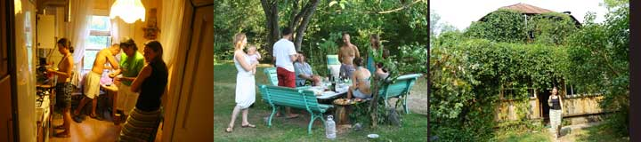
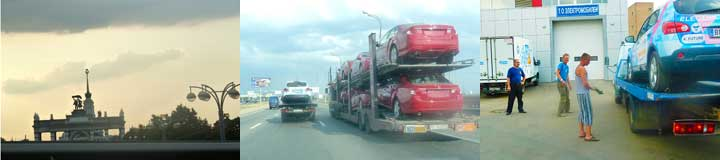
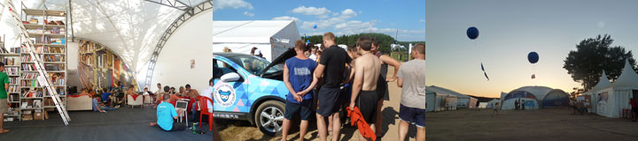
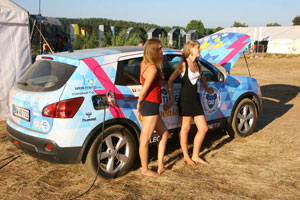
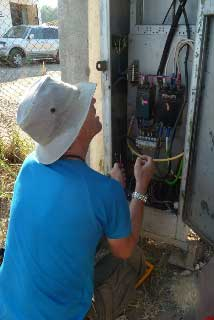
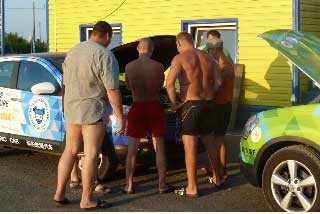
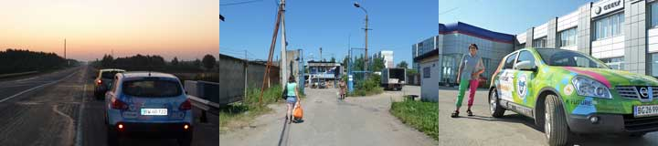

Denne smeltende varme dag tilbragte vi i haven omkring Dimas og Marinas eventyrlige hus. Vi fik besøg af adskillige folk som vi demonstrerede den grønne elbil for. Hjalte var også på besøg hos en nabo som havde en stor samling af gamle biler, motorcykler.

Moskva er blevet til en anden by end den vi besøgte for 20 år siden. Den er vokset, og alt det der var mangel på dengang er der nu overflod af - Millioner af mennesker har fået en bil, der er rekl kirker med gyldne kupler, og hotellerne fra stalintiden. Men nu virker alt det småt, fordi det drukner i alt det nye som er større, flottere, mere påtrængende. Det tog et par timer at komme fra den kommunale elbil-garage til Dima og marinas sommerhus i udkanten af byen. Uden vores GPS og satellitantennen på taget af den grønne bil, var det aldrig gået. Efter nogle timer i Moskvas trafik var det vidunderligt at komme ud i en have i byens yderste udkant. Marinaog Dima serverede en dejlig middag under æbletræet, aftenen var lun og lys, vi var i Paradis

Jeg, den blå bil vågnede efter en nat med god strøm fra en brandstation, og opdagede at jeg næsten ingenting havde fået indenbords. Hjalte og Nina blev lidt trætte da de så det, men besluttede dog at køre så langt som det var muligt. Resultatet var at jeg løb ud for strøm på motorvejen 80 kilometer fra moskva, Da der lå en tankstation for enden af en lang bakke trillede jeg derned. Hjalte ringede til Oleg, som arrangerede et fejeblad til at bringe mig til Moskvas kommunale el-bil værksted. Men sikke en trafik der var i Moskva, aldrig har jeg oplevet noget så skrækkeligt, Ja jeg var ligefrem glad for ikke at køre på egne hjul - og luften var tyk som ærtesuppe af bare udstødningsgasser. Nina og hjalte fulgte efter i den Grønne bil, og da jeg var sat af kørte de videre til deres venner Marina og Dima.
Rusland har kolosale områder med uberørt natur. Selvsåede skove, enge, sumpe, floder, bække og åer- selv hvor der engang var marker er jorden blevet til blomstereng med spredte buske og træer. Langs vejene vokser skove af bjørneklo, og man kan kke se skoven for bar træer. Naturen breder sig helt ind i byerne og ind i haverne, ingen gør noget, det er vel også godt med så meget grønt. Samtidig er der kommet varer i butikkerne og folk har fået pænt moderne tøj.

Seliger sommerlejren for unge opfindere og videnskabsfolk ligger uendelig smukt ved en sø. Vores opdukken igår der var en stor succes, selv om det endte med at vi blev smidt ud. Alle var meget interesserede i bilerne som blev stærkt beundrede, og hundredevis af unge fotograferede hinanden foran bilerne eller inde i dem, det var alle tiders. For de unge russere var det en drøm engang at eje sådan en bil. Det var meget opmuntrende at se hvordan russerne har forstået at de har brug for de unges kreativitet, og derfor giver de dygtigste fra universiteterne muligheden for at udfolde sig og møde hinanden. Vi blev opfordret til at blive en halv dag mere for at bilerne kunne stå foran “Den ny by” en teltlejr med fantastiske byudviklingsplaner. Vi kørte bilerne ned til søen for at vaske dem, så de kunne tage sig godt ud. Men da kom fire “Security” i camouflagetøj og sagde at det var forbudt at køre bilerne ned til søen. Så kørte vi dem op igen, men de lod os forstå at vi havde forbrudt os mod en regel, og straks skulle forlade lejren. Det gjorde vi så. Sidder nu i godt humør og lader op bag ved et bilværksted med cafeteria. Stadig hedebølge og bragende solskin, kan man forlange mere?
Med vores sidste strøm nåede vi frem til den kæmpestore bevogtede teltlejr ved Seliger-søen, hvor udvalgte unge fra hele Rusland var samlet. Det tog Oleg fra Ekomotors et par timer at skaffe os et adgangstegn. Tusindvis af energiske og innovative unge udstillede deres opfindelser, søgte investorer , inspirerede hinanden og havde det pragtfuldt. Stort billede af Medvedjev og Putin som forsøger at kombinere magten med det faktum at Rusland har brug for fornyelse.
Interessen for vores to elbiler var enorm. Vi demonstrerede og forklarede i timevis og de unge fotograferede hinanden foran bilerne eller inde i bilerne. Oleg udstillede elscotere og elcykler, og vores biler var det helt store hit. Vi havde en dejlig aften med god stemning overalt.
Først sent fandt vi en generator der kunne forsyne bilerne med strøm - og ved et lykketræf fandt vi et forladt telt vi kunne sove i lige ved siden af.
Nina og Hjalte
Vi har kastet os ud i et eksperiment, som nok skal lykkes når vi har modtaget et par reservedele til den blå bil. Vores elbil-ekspedition jorden rundt kan naturligvis slet ikke sammenlignes med de strabadser og farer som polar-ekspeditioner må udstå. Men helt let er det ikke. I dag er vi ikke kommet mere end 87 kilometer frem, fordi laderen i den Blå bil har gjort knuder. Hedebølgen forfølger os stadig... endnu har vi ikke fået en dråbe regn og der er omkring tredive grader inde i bilerne hele dagen.
I dette øjeblik kommer tre russiske elbil-pionerer ind i det cafeteria hvor vi sidder. De har set på hjemmesiden hvor vi er lige nu. Det er da helt fantastisk! Det trick foregår via telefonnettet og satellitterne - lige til at blive høj af.
I morgen er vi inviteret til et stort arrangement som elbil-folkene afholder ved Seliger Søen. Denne blog læser de på russisk via en oversættermaskine. Ikke helt perfekt, men dog forståeligt, siger de og griner.
Nina

Hvor længe mon Hjalte og Nina er om at forstå at min ene oplader er i stykker? Hver eneste aften er jeg gået i stå i utide, og de to tosser har maset med mig, så de knapt har haft tid til at sove og spise.
Men jeg og Green bliver beundrede hver eneste dag. Alle russere har hørt om elbiler, men få har set dem. Folk synes næsten at de har fået en åbenbaring når vi ruller lydløst frem, drevet af elektromagnetiske kræfter. Russerne siger også at vi to elbiler er smukke! Al den interesse og velvilje betyder at Hjalte og Nina kun har betalt for strøm èn eneste gang. Det blev 25 kroner! og vi har snart kørt 2500 km.
Hilsen fra Blue Car

Vi kom af sted fra Novgorod, nyvaskede og veltilpasse, og bilerne fuldt opladede uden problemer. Midt på dagen holdt vi ladepause på et autoværksted. Chefen og de ansatte gik på nettet hvor de fandt hjemmesiden moto-mundo.com. De blev meget forundrede og begejstrede da de takket være Vikingegården og Google Earth , kunne se deres by, med deres eget værksted, og vores biler Green Car og Blue Car. Det var en lykkelig dag, lige indtil Blue løb ud for strøm, skønt displayet viste 23% . Så stod vi der. På det nærmeste hotel sad en sur havgasse tilbage fra Sovjettiden sammen med en vagtmand. De var ikke var meget samarbejdsvillige - og da hotellets relæ slog fra, og ingen vidste hvor det sad, var det slut med den gode vilje. Et par timer over midnat opgav vi at få strøm fra Hotellet, hvis facadeskilt vi så elegant havde fået slukket. Vi sattte vi vores to nødgeneratorer til at lade bilerne. Klokken 4.20 måtte der hældes mere benzin på. Det blev ikke til meget søvn, og bilerne var kun halvt opladede da vi tidligt på morgenen kørte videre.
Nina

Tidligt om morgenen rullede den blå og den grønne ind i Novgorod med to meget trætte og varme chauffører. Efter et par fatalt strømslugende fejlforsøg fandt vi en stor bilforhandler med værksted. Det passede så hårfint at Blue løb ud for strøm på en befærdet bouleward tohundrede meter forinden. Green måtte så trække blue, indtil den selv gik i stå 50 meter fra værkstedet. Da var hjælpen inden for rækkevidde. Bilerne blev trukket på plads og sat til at lade med noget ordentlig strøm - Vi var ellers ved at tro at det ikke fandtes i hele Rusland. Satellittelefonen glødede igen - Blå ville stadig kun lade med tænding på, men samarbejdet med Søren i Saxkøbing fungerer fantastisk. Han kan fra Danmark måle på bilerne, det er formodentlig en diode der ikke virker.